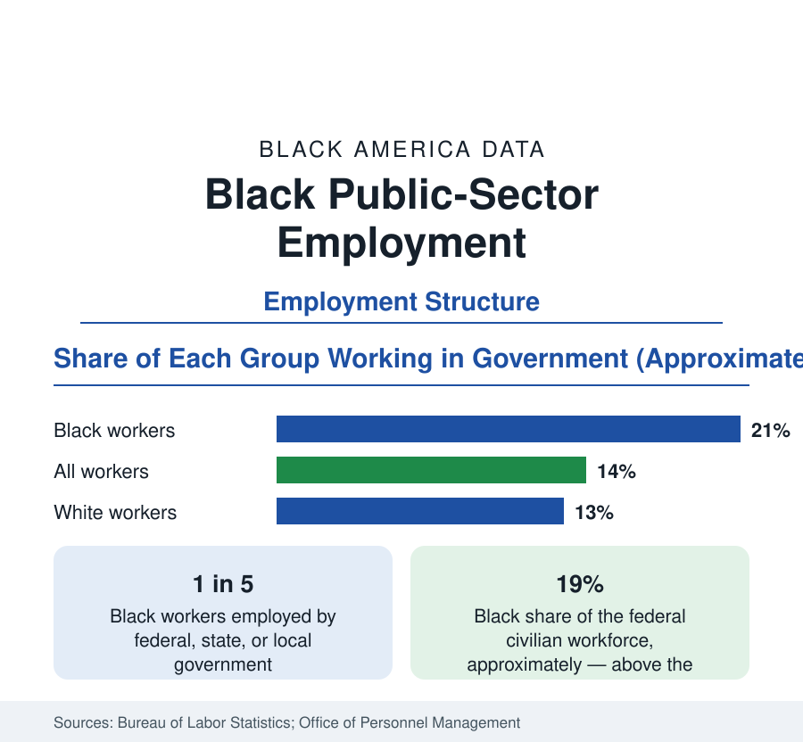

Black Employment
Black Workers in the Public Sector: Government as Employer
About one in five Black workers works for a government — federal, state, or local — a share far above the national figure, with consequences across the employment data.

About one in five Black workers in the United States works for a government — federal, state, or local — a share roughly half again the national figure of about one in seven, and one of the largest structural facts in Black employment data. Government is the sector where Black Americans first gained broad access to middle-class employment, where the Black-white pay gap is measurably narrowest, and where pensions and benefits coverage run highest. It is also the sector whose contractions fall hardest on Black workers. This article reports the public-sector data.
The Three Levels
The federal government employs Black workers at a share — roughly 19 percent of the civilian federal workforce by the Office of Personnel Management's counts — above the Black share of employment overall, with concentrations in the Postal Service, the Veterans Affairs health system, defense, and the administrative agencies. The postal service holds a particular place in the data's history: as one of the first large federal employers open to Black workers, it anchored Black middle-class communities in city after city through the twentieth century, and it remains one of the largest single employers of Black workers in the nation. State government adds the public universities, the health systems, and the administrative apparatus; local government — the largest of the three levels for Black employment — adds public schools above all, along with transit systems, hospitals, sanitation, and municipal administration.
Why Government Paid Differently
The economic distinctiveness of public employment in the Black data comes from its rules. Civil-service hiring and promotion by examination and schedule, published pay grades, and — for much of the sector — union contracts compress the wage distribution and constrain discretionary pay-setting. The measured consequence, consistent across the labor literature, is that the Black-white wage gap within government is substantially smaller than in the private sector for comparable work, and the gender gap smaller still; Black women in particular record their strongest relative earnings in public employment. Benefits widen the advantage: pension coverage — increasingly rare in the private economy — remains standard in government, and public retirees' pension income is a measurable component of the Black retirement-income data in the census section.
The Education and Health Pipeline
The public sector's Black workforce is professionally distinctive: it is weighted toward education and health. Public schools employ Black teachers, administrators, and support staff in numbers that make education one of the largest fields of Black professional employment; public hospitals and health departments do the same for Black clinicians and technicians; and the HBCU system of the education section is itself substantially public — state universities whose payrolls and pipelines are part of this article's subject. The result is an interlocking structure: public institutions educate Black professionals, then employ them, then pension them — the closest thing in the American economy to a complete Black middle-class circuit, and the reason state budget politics register so directly in Black economic data.
Exposure: When Government Shrinks
The sector's weight cuts both ways. Government employment is steadier than private employment across ordinary business cycles — a stabilizer visible in the unemployment data — but it is exposed to fiscal and political cycles instead. The state and local austerity that followed the Great Recession eliminated public jobs on a scale that fell disproportionately on Black workers and is identified in the literature as a material cause of the slow Black recovery of the 2010s; Black public employment had not fully regained its pre-recession level a decade later. Federal workforce reductions register in the data the same way. No other sector transmits policy decisions into Black household income as directly, which is why this reference tracks public employment as a standing series.
Reading the Public-Sector Data
The interpretive point is calibration: Black economic statistics generally are partly public-sector statistics. The narrower wage gaps, the higher benefit coverage, the steadier employment — where Black figures approach national ones in this reference, government employment is usually somewhere in the explanation; where the figures diverge most sharply, as in private-sector executive ranks, its absence is. Summarized: one worker in five, a fifth of the federal workforce, the narrowest pay gaps in the economy, and a standing exposure to the public budget. Government is not a footnote to Black employment. It is one of its load-bearing walls.
More in Black Employment
The Black Unemployment Rate: The Two-to-One Pattern
Black unemployment runs at roughly twice the White rate — 5.5 percent against 3.3 percent in annual averages — a ratio stable across five decades of federal data. How it is measured and why it persists.
Black Median Weekly Earnings: The 80-Cent Ratio
Black full-time workers earn a median of about $900 a week — roughly 80 cents for every dollar White workers earn. The BLS earnings data by group, gender, and occupation.
Black Labor Force Participation: Working at National Rates
Black labor force participation runs at roughly the national rate — and Black women participate at higher rates than White women. The BLS participation data.
Source: U.S. Bureau of Labor Statistics, Current Population Survey; U.S. Office of Personnel Management, Federal Workforce Data; Economic Policy Institute analyses.